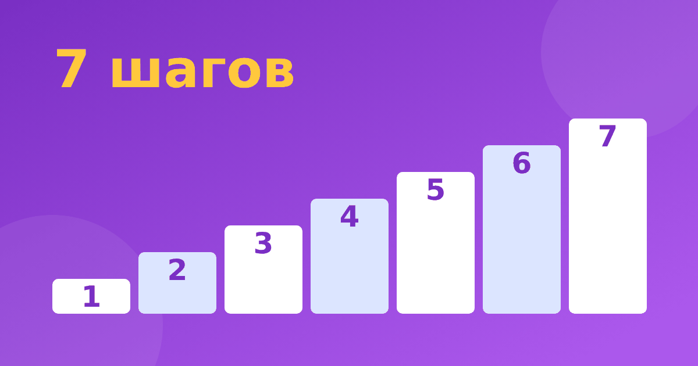

Счёт в уме: семь шагов, которые ведут от предметов к двузначным числам

Родители часто спрашивают, как научить ребёнка считать в уме, и ждут одного волшебного упражнения. Его нет, но есть последовательность шагов, где каждый опирается на предыдущий. Если пропустить звено, счёт в уме превращается в угадывание. Ниже семь шагов, примеры и ошибки, которых стоит избегать.
Шаг 1. Счёт предметов
Всё начинается с реальных вещей: ребёнок считает ложки, ступеньки, яблоки, касаясь каждого предмета. Он должен понимать, что последнее число показывает общее количество. Если здесь есть пробелы, остальные шаги не получатся.
Шаг 2. Состав числа
Следующий шаг: понять, из каких частей состоит число. 6 — это 1 и 5, 2 и 4, 3 и 3. Этому посвящена статья про состав числа до 10. Именно состав превращает счёт на пальцах в мышление.
Шаг 3. Примеры до 10
Сложение и вычитание в пределах 10 нужно довести до скорости, когда ответ появляется без счёта. Например, 4 + 3 = 7, 9 − 4 = 5. Хорошо помогает дополнение до 10: знание пар до 10 пригодится на каждом следующем этапе.
Шаг 4. Переход через десяток
Здесь ребёнок учится разбивать число. Пример 8 + 5: чтобы дойти до 10, нужно 2, а из 5 остаётся 3, итог 13. Подробный разбор есть в статье про сложение через десяток, а вычитание разобрано отдельно.
Шаг 5. Двузначные числа
Теперь число делится на десятки и единицы. 47 + 25: сначала 47 + 20 = 67, потом 67 + 5 = 72. Принцип обсуждается в материалах про разрядное сложение и счёт в уме до 100. К этому моменту ребёнку удобна числовая лента, в тренажёре «Устный счёт» она встроена в задания.
Шаг 6. Счёт по частям
Когда числа большие, а голова одна, помогает привычка делить пример на небольшие шаги и называть каждый вслух. Возьмём 82 − 37: сначала 82 − 30 = 52, затем 52 − 2 = 50, затем 50 − 5 = 45. Три маленьких шага вместо одного большого. Для вычитания это описано в статье вычитание по частям. Для трёхзначных чисел переходите к материалу про сложение трёхзначных чисел в уме.
Шаг 7. Проверка
Последний шаг делает навык надёжным: ответ проверяют обратным действием. Если 72 − 25 = 47, то 47 + 25 должно дать 72, и это совпадает. Привычка проверять сокращает количество случайных ошибок и учит ребёнка сомневаться разумно.
Как понять, на каком шаге вы сейчас
Предложите три коротких примера: 7 + 2, 8 + 5 и 36 + 27. Если первый вызывает паузу, вернитесь к шагам 2 и 3. Если трудность во втором, остановитесь на шаге 4. Если третий даётся плохо, работайте над шагом 5. Такая мини-проверка занимает минуту и помогает не тратить время на то, что ребёнок уже умеет, и не прыгать на то, к чему он ещё не подошёл. Повторяйте её раз в неделю: двигаться по ступеням удобнее, когда видишь, на какой стоишь.
Чего лучше не делать родителям
- Не требовать скорости на новом приёме: сначала понимание, потом темп.
- Не сравнивать с одноклассниками и братьями.
- Не переходить к следующему шагу, пока предыдущий не получается без долгих пауз.
- Не исправлять сразу: дайте ребёнку шанс заметить ошибку самому.
Распространённые сложности разобраны в статье про ошибки в устном счёте.
Для примера возьмём один день занятий на шаге 5. Сначала разминка: три примера на круглые числа, вроде 40 + 30 = 70 и 90 − 50 = 40. Затем новый приём: 36 + 27, где 36 + 20 = 56, потом 56 + 4 = 60 и ещё 3, итого 63. После этого два примера на закрепление: 58 + 15 = 73 и 74 − 26 = 48. Заканчивайте всегда лёгким примером, чтобы остался вкус успеха.
Режим: 10 минут в день
Десяти минут в день достаточно, чтобы продвигаться: пять на повторение, пять на новый приём. Если день пропущен, просто продолжайте со следующего. Готовый график можно взять из плана занятий по устному счёту. В тренажёре «Устный счёт» девять модулей, часть из них бесплатна, а кнопка «Объясни по-другому» помогает, если приём не понятен с первого раза.
Частые вопросы
С какого возраста можно учить счёту в уме?
Основы появляются ещё до школы, в играх со счётом предметов. Системные приёмы лучше показывать, когда ребёнок уверенно считает до 20, обычно в 1–2 классе.
Что делать, если ребёнок считает на пальцах?
Это нормальный этап. Постепенно заменяйте пальцы составом числа и числовой лентой, не запрещая их резко.
Через сколько ждать результата?
Сроки зависят от ребёнка, и обещать конкретные дни нельзя. Ориентируйтесь на уверенность в текущем шаге, а не на календарь.
Счёт в уме не открытие, а привычка, которую можно построить из мелких шагов. Начните с того, что у вашего ребёнка уже получается, и двигайтесь дальше по этой лестнице.